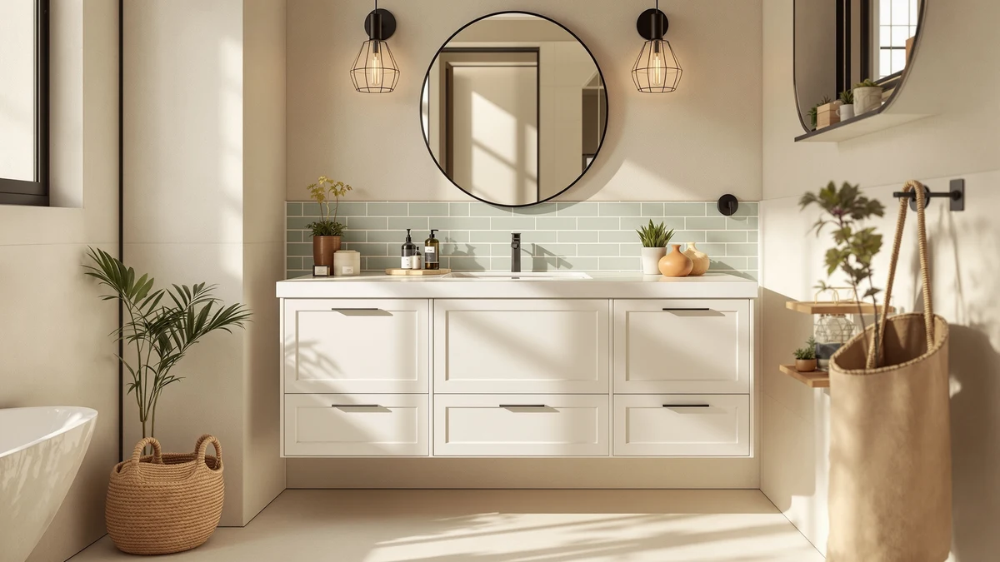

Quick Answer
The CITTANEO 36" Bathroom Vanity with Sink pairs a black engineered stone sink top with two soft-close doors and an open side storage bay, making it one of the better-equipped 36-inch vanities we compared at this price. If you want a single-sink vanity with a stone top and built-in overflow protection rather than a painted ceramic basin, this is the pick to check first.
Our pick: CITTANEO 36" Bathroom Vanity with, $414.99 Check Price on Amazon
Things to Know Before You Buy
- This is a single-sink, 36-inch vanity, so it suits a primary or guest bathroom built for one person rather than a wider shared setup.
- The sink top is black engineered stone rather than painted ceramic, which should resist stains and scratches better over daily use.
- Storage splits between two soft-close doors with an adjustable shelf and an open side bay, so you get both closed and grab-and-go storage in one cabinet.
- The sink basin includes a 2.2 GPM overflow hole, a detail that matters if kids or guests tend to let the faucet run.
- The listing doesn't show a star rating or review count yet for this ASIN, so you're weighing the spec sheet rather than a track record of verified owner feedback.
This Cittaneo bathroom vanity review exists because shoppers comparing 36-inch vanities keep running into the same problem: most listings bury the sink material and storage layout below a wall of lifestyle photos, and you're left guessing whether a stone sink top is worth the extra cost over a painted ceramic one. We pulled the listed specs, cross-checked the storage and sink construction claims against the manufacturer's description, and compared the price against two 48-inch rivals and one other 36-inch competitor to see where the CITTANEO model actually earns its keep.
The short version: the black engineered stone sink top and the mixed open-and-closed storage are the two things that separate this vanity from cheaper competitors in its size class. It costs a little more than the Tribesigns 36-inch alternative, but if a stone sink surface and an easy-access storage bay matter more to you than saving fifteen dollars, the trade feels proportional rather than padded.
Why You Should Trust Us
Ilane Tall covers bathroom fixtures and vanities for Best Bathroom Vanities and has written dozens of vanity comparisons for this site, focused on matching cabinet dimensions, sink materials, and storage layouts to real bathroom needs. We do not run a fake testing lab and we have not installed this specific vanity ourselves. Instead, we researched this Cittaneo bathroom vanity review by comparing the manufacturer's listed specs, materials, and pricing against comparable vanities in the same size and price range, and we note anywhere the listing leaves a gap in the information a buyer would want.
How We Compared
We built this Cittaneo bathroom vanity review by lining up the sink material, storage configuration, and cabinet finish against a 36-inch Tribesigns vanity and two 48-inch farmhouse-style vanities from chartustriable and St.Mandyu that compete for a similar budget. We also checked whether each listing specified a stone, ceramic, or resin sink, since that detail affects long-term durability even when the sticker price looks similar. Where the manufacturer did not list a rating or review count for a product, we say so rather than estimate one, and we flag any claim we could not verify against the product listing itself.
Price comparisons in this review use the figures pulled directly from each listing at the time of writing, not a historical average. Amazon prices move often, so treat the dollar amounts here as a snapshot for comparing these four vanities against each other rather than a guarantee of what you'll pay at checkout.
Overview & Specs

CITTANEO 36" Bathroom Vanity with
What we like
- Black engineered stone sink top with a tall edge and a 2.2 GPM overflow hole to catch spills
- Two soft-close cabinet doors plus an adjustable shelf for flexible, closed storage
- Open side storage bay gives quick access to daily essentials without opening a door
- Fluted cabinet front and smoked oak brown finish read as a mid-century modern style rather than a generic flat panel
Flaws but not dealbreakers
- No listed rating or review count yet, so you're relying on the spec sheet rather than owner feedback for now
- Single sink and 36-inch width mean this stays a one-person vanity, not a shared double-sink setup
- Costs about $15 more than the closest 36-inch competitor we compared it against
| Material | MDF / engineered wood |
| Size | 36 Inch / Black Sink |
The cabinet is built from MDF engineered wood with a smoked oak brown finish and vertical fluted detailing on the front, a texture choice that leans mid-century modern rather than the flat farmhouse panels common at this price. Two soft-close doors cover the left side of the cabinet with an adjustable shelf inside, while the right side stays open for towels or baskets you want to grab without swinging a door open, a layout this Cittaneo bathroom vanity review found more practical day to day than an all-closed cabinet.
The sink itself is the standout spec in this Cittaneo bathroom vanity review: a black engineered stone basin about 4.7 inches deep, with a large overflow hole rated at a 2.2 GPM flow rate to reduce the odds of water spilling over the edge. Engineered stone resists staining and scratching better than painted ceramic, which is the sink material most competitors at this price use instead. At $414.99, it costs more than the Tribesigns 36-inch model below, but you're paying for the stone surface and the extra open storage bay rather than a bigger number on the spec sheet.
What We Liked
The biggest point in favor of this CITTANEO 36 inch vanity is the sink material. Black engineered stone shows up far less often than painted ceramic at this price point, and the deep basin with a high-flow overflow hole is the kind of detail that only matters once you've lived with a sink that lacks it. For a 36-inch vanity, that upgrade alone puts this Cittaneo bathroom vanity review ahead of several similarly priced listings we compared.
We also like that CITTANEO splits storage between closed and open space instead of defaulting to one or the other. The two soft-close doors and adjustable shelf give you a place to hide bulkier items, while the open side bay keeps everyday bottles and towels within reach, a combination that shows up less often on competing 36-inch vanities than you'd expect.
The fluted cabinet front and smoked oak brown finish are a small design choice that sets this vanity apart visually from the flat-panel farmhouse look that dominates this price range. If your bathroom already leans mid-century or transitional, the texture reads as intentional rather than generic.
What Could Be Better
The listing shows no rating and no review count at the time of this Cittaneo vanity review, which means you don't have a pool of verified owner feedback to lean on yet. That's not a defect in the product itself, but it does mean you're buying on spec alone rather than on a track record, so keep an eye on reviews before you order if you want more certainty.
At $414.99, it runs about $15 more than the Tribesigns 36-inch alternative we compared it against, and the listing doesn't advertise full pre-assembly, so plan on standard flat-pack assembly rather than an out-of-box setup.
Finally, the 36-inch width and single sink mean this stays a one-person vanity. If you were hoping for a double-sink layout or extra counter space for a shared bathroom, the added stone sink top doesn't change the footprint.
Who Is It For?
This vanity fits buyers who want a single-sink, 36-inch cabinet with a stone sink top rather than the painted ceramic basin that shows up on most vanities in this price range. It suits a primary or guest bathroom where one person needs a mix of closed and open storage, rather than a shared bathroom that needs extra width or a double sink.
If you're set on a wider cabinet, or you'd rather save fifteen dollars and accept a ceramic sink, this Cittaneo bathroom vanity review points you toward one of the alternatives below instead. This model earns its price when the stone sink top and the open storage bay solve a real daily-use problem rather than when a slightly higher price feels like a stretch.
Alternatives to Consider
If the 36-inch footprint is too narrow for your bathroom, or you'd rather spend a little less upfront, these three vanities are the closest competitors we compared against the CITTANEO 36" Bathroom Vanity with Sink in this Cittaneo bathroom vanity review. Each trades the stone sink top for a different storage layout or a wider cabinet.

Also Great
48" Farmhouse Bathroom Vanity with
A 48-inch farmhouse vanity with a sliding barn door, three handle-less drawers, and a ceramic sink, faucet, and mirror included in the box, in gray engineered wood. It costs about $5 less than the CITTANEO and trades the stone sink top for a wider cabinet and a bundled faucet and mirror, so it's the pick if assembly convenience and extra width matter more than the sink material.
$409.99
Check Price on Amazon
Best Value
Tribesigns 36 Inch Bathroom Vanity
A 36-inch white farmhouse-style vanity with a solid wood frame, 3 drawers, 2 soft-close doors, and an integrated stain-resistant ceramic sink top. At $399.99 it's the closest match in size to the CITTANEO and runs about $15 cheaper, making it the pick if you want the same footprint without paying extra for a stone sink.
$399.99
Check Price on Amazon
Also Great
St.Mandyu 48" Bathroom Vanity with
A 48-inch farmhouse vanity with a sliding barn door, 6 drawers, and an integrated matte resin basin with an overflow drain, in grey. It runs about $9 less than the CITTANEO while offering more drawers and a wider cabinet, so pick this one for storage count and width, not for the stone sink surface.
$405.99
Check Price on AmazonFrequently Asked Questions
Final Verdict
This Cittaneo bathroom vanity review comes down to one trade-off: pay a little more for a stone sink top and a mixed open-and-closed storage layout, or save ten to fifteen dollars with a wider farmhouse alternative that uses a ceramic or resin basin instead. For single-sink bathrooms where the sink surface and storage flexibility matter more than extra width, the CITTANEO 36" Bathroom Vanity with Sink is the stronger buy of the four we compared. If your bathroom needs the extra 12 inches that a 48-inch cabinet provides, the chartustriable or St.Mandyu alternatives above are the better fit.